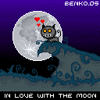

This article discusses a useful technique for giving your canvas/WebGL games a crisp pixel art look, even on high definition monitors.
Retro pixel art aesthetics are getting popular, especially in indie games or game jam entries. But since today's screens render content at high resolutions, there is a problem with making sure the pixel art does not look blurry. Developers have been manually scaling up graphics so they are shown with blocks that represent pixels. Two downsides to this method are larger file sizes and compression artifacts.
| original size | 4x size | 4x size (scaled with an image editor) |
| none | vendor's algorithm | nearest-neighbor algorithm |
The good news is that you can use CSS to automatically do the up-scaling, which not only solves the blur problem, but also allows you to use the images in their original, smaller size, thus saving download time. Also, some game techniques require algorithms that analyze images, which also benefit from working with smaller images.
The CSS property to achieve this scaling is {{cssxref("image-rendering")}}. It is still experimental, but there is partial support in most browsers. The steps to achieve this effect are:
width and height attributes to the original, smaller resolution.width and height. If the canvas was created with a 128 pixel width, for example, we would set the CSS width to 512px if we wanted a 4x scale.image-rendering CSS property to some value that does not make the image blurry. Either crisp-edges or pixelated will work. Check out the {{cssxref("image-rendering")}} article for more information on the differences between these values, and which prefixes to use depending on the browser.Let's have a look at an example. The original image we want to upscale looks like this:

Here's some HTML to create a simple canvas:
<canvas id="game" width="128" height="128"></canvas>
CSS to size the canvas and render a crisp image:
canvas {
width: 512px;
height: 512px;
image-rendering: -moz-crisp-edges;
image-rendering: -webkit-crisp-edges;
image-rendering: pixelated;
image-rendering: crisp-edges;
}
And some JavaScript to set up the canvas and load the image:
// get canvas context
var ctx = document.getElementById('game').getContext('2d');
// load image
var image = new Image();
image.onload = function () {
// draw the image into the canvas
ctx.drawImage(image, 0, 0);
}
image.src = 'https://mdn.mozillademos.org/files/12640/cat.png';
This code used together produces the following result:
{{ EmbedLiveSample('An_example', '100%', 520) }}
Note: You can check out the original code on Github (and a live example.)